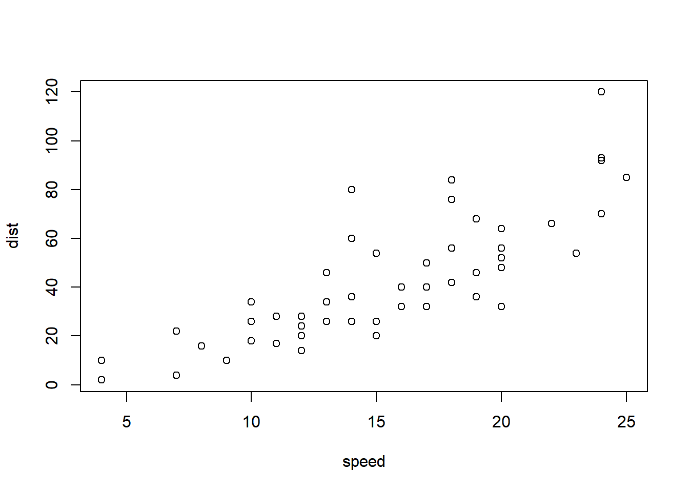

Code
plot(cars)

Quarto & LaTex
Instructor: Dongeun Kim
This document will provide you a very brief introduction to using Quarto and LaTex to improve your reports and presentation of your data analyses.
Quarto is an expanded version of R Markdown for rendering reports with integrated code like the one you are currently reading. To create a quarto document, select Create a new Quarto document from the New File drop down in RStudio.
As this is a markdown style, most of the options this gives you access to are ways to modify text or add other embellishments to your report. Below are a few examples on how to change the text.
LaTeX is a high-quality typesetting system that is widely used for producing scientific and mathematical documents. It is especially useful when your report includes complex equations, tables, and citations.
To create a LaTeX document, you typically start with a .tex file and compile it into a PDF using a TeX engine such as pdflatex, xelatex, or lualatex.
While Quarto is excellent for combining code and text, LaTeX is the go-to tool when you want full control over formatting in academic writing, especially for papers with complex equations.
.qmd and produces HTML / PDF / Word / slides.pdflatex, xelatex, or lualatex).Render flow (PDF): .qmd → Pandoc Markdown → LaTeX → PDF.
.html appears in your project folder.| Markdown | Renders as |
|---|---|
*italics* |
italics |
**bold** |
bold |
***bold italics*** |
bold italics |
superscript^2^ |
superscript2 |
subscript~i~ |
subscripti |
~~strike~~ |
|
`verbatim` |
verbatim |
| Markdown | Heading |
|---|---|
# Heading 1 |
# Heading 1 |
## Heading 2 |
## Heading 2 |
### Heading 3 |
### Heading 3 |
#### Heading 4 |
#### Heading 4 |
##### Heading 5 |
##### Heading 5 |
###### Heading 6 |
###### Heading 6 |
| Markdown | Renders as |
|---|---|
<https://quarto.org> |
https://quarto.org |
[Quarto](https://quarto.org) |
Quarto |
Markdown source:
| Right | Left | Default | Center |
|------:|:-----|---------|:------:|
| 12 | 12 | 12 | 12 |
| 123 | 123 | 123 | 123 |
| 1 | 1 | 1 | 1 |Rendered:
| Right | Left | Default | Center |
|---|---|---|---|
| 12 | 12 | 12 | 12 |
| 123 | 123 | 123 | 123 |
| 1 | 1 | 1 | 1 |
Use a fenced code block for plain code (not executed):
```r
#### plain code, not evaluated
1 + 1
Use a **runnable** chunk with options (note the `{r}` + `#|` lines):
::: {.cell}
```{.r .cell-code}
plot(cars)
:::
Useful options: - #| eval: false → show code but don’t run - #| echo: false → hide code, show results - #| warning: false, #| message: false → suppress output noise - #| fig-cap: "Caption" → caption figures - #| tbl-cap: "Caption" → caption tables
Prefer project‑root execution so all paths are consistent:
execute:
dir: projectIf absolutely needed, set a custom path in a setup chunk:
Inline math: \( E = mc^2 \) → ( E = mc^2 ).
Display math:
$$
y = \beta_0 + \beta_1 x + \epsilon
$$\begin{align}
y &= \beta_0 + \beta_1 x + \epsilon \\
\hat{y} &= \beta_0 + \beta_1 x
\end{align}Number and reference:
$$
E = mc^2
(\#eq-einstein)
$$
As shown in @eq-einstein, mass–energy equivalence holds.Label equations with (\#eq-name), then cite with @eq-name.
Figure (label via label: and caption via fig-cap:):
plot(cars)Refer to Figure 1 in text.
Table (create an R table and label it):
head(mtcars, 6) mpg cyl disp hp drat wt qsec vs am gear carb
Mazda RX4 21.0 6 160 110 3.90 2.620 16.46 0 1 4 4
Mazda RX4 Wag 21.0 6 160 110 3.90 2.875 17.02 0 1 4 4
Datsun 710 22.8 4 108 93 3.85 2.320 18.61 1 1 4 1
Hornet 4 Drive 21.4 6 258 110 3.08 3.215 19.44 1 0 3 1
Hornet Sportabout 18.7 8 360 175 3.15 3.440 17.02 0 0 3 2
Valiant 18.1 6 225 105 2.76 3.460 20.22 1 0 3 1Refer to Table 1 in text.
Use inline code for short commands:
- `\documentclass` sets the type of document.
- `\usepackage{amsmath}` adds math support.
- `\maketitle` prints title/author/date.
- `\begin{document}` starts visible content.Use a fenced code block for longer examples:
```latex
\documentclass{article}
\usepackage{amsmath}
\title{My First LaTeX Doc}
\author{Your Name}
\date{\today}
\begin{document}
\maketitle
Hello World!
\end{document}
```If you type a backslash in plain text (not code), escape it as \.
preamble.texYAML in your .qmd:
format:
pdf:
include-in-header: preamble.texCreate preamble.tex (project root or same folder):
% preamble.tex
\usepackage{amsmath, amssymb}
\usepackage{booktabs}
\newcommand{\R}{\mathbb{R}}format:
pdf:
template: templates/custom.tex
include-in-header: preamble.tex_quarto.yml)project:
type: default
format:
html:
toc: true
pdf:
pdf-engine: lualatex
toc: true
execute:
dir: projectAdd a bibliography in YAML:
bibliography: references.bib
csl: apa.csl # optional styleCite with @key and include a refs section:
## References(Quarto/Pandoc will print the bibliography automatically at the end.)